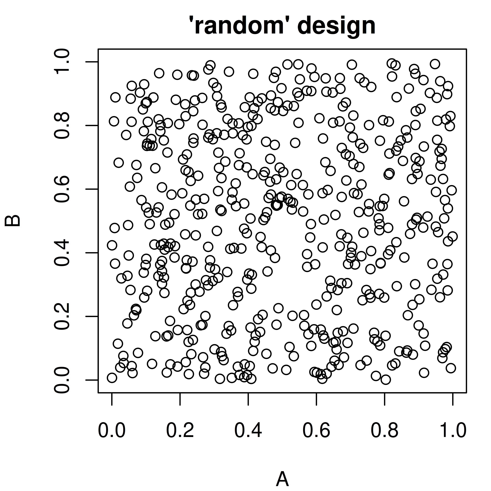
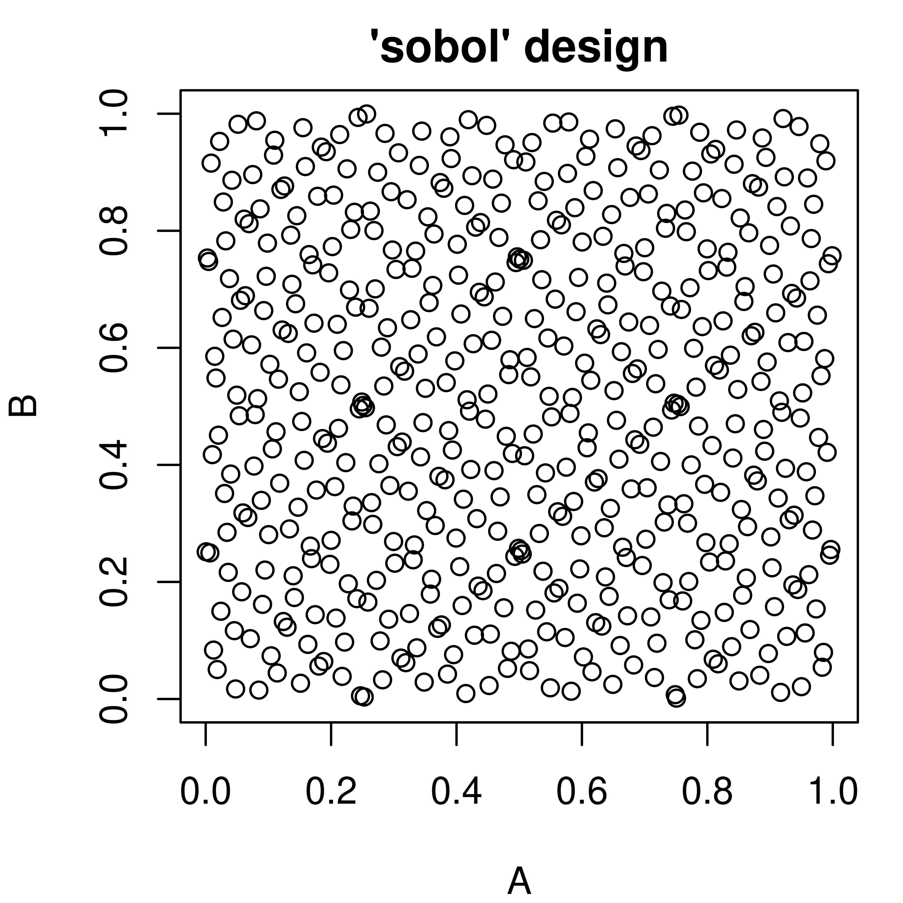
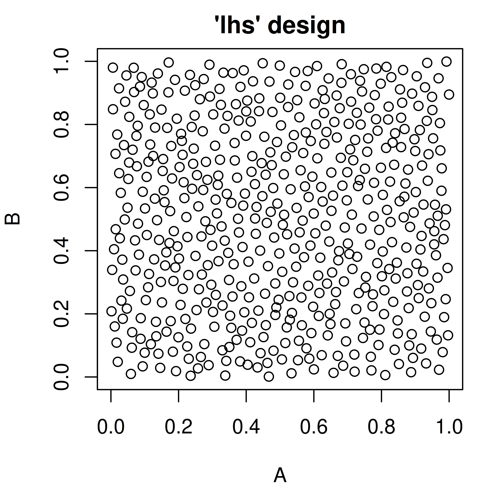

<ParamSet(1)>
id class lower upper nlevels default value
1: a ParamInt -Inf Inf Inf <NoDefault[0]> 1Martin Binder
Ludwig-Maximilians-Universität München, and Munich Center for Machine Learning (MCML)
Sebastian Fischer
Ludwig-Maximilians-Universität München, and Munich Center for Machine Learning (MCML)
Michel Lang
Research Center Trustworthy Data Science and Security, and TU Dortmund University
Alexander Winterstetter
Ludwig-Maximilians-Universität München
在前面的章节中，我们已经概述了如何手动设置超参数（2.2.3 节）或自动优化超参数（第 4 章）。
在本章中，我们将介绍paradox包，它提供了一种描述参数空间（Parameter Space）的语言，以及对这些参数空间进行有用操作的工具。参数空间在描述以下内容时通常很有用：
- 一个 R 函数的一组合理输入值
- 一个配置对象的字段可以取的值的集合
- 优化过程的搜索空间（Search Space）
因此，paradox提供的工具涉及：
- 参数检查（Parameter Checking）：验证一组参数是否满足参数空间的条件
- 参数采样（Parameter Sampling）：生成位于参数空间中的参数值，以便系统地探索取决于这些参数的程序行为
paradox本质上是一个辅助包，它的价值来源于其他使用它的包。mlr3生态系统的其他包大量使用它，例如mlr3、mlr3pipelines、mlr3tuning和miesmuschel。
背景与解释（译者注）：参数空间（Parameter Space）在机器学习中通常指一个函数或算法所有可接受参数取值的集合。例如 rpart 决策树的 minsplit 只能取正整数、cp 只能取非负实数。paradox 包相当于把这个概念「一等公民化」：它不仅描述取值范围，还统一处理参数类型、依赖关系、变换函数和采样。理解 paradox 有助于理解 mlr3 生态中的许多关键概念，因为 mlr3 的 Learner（学习器）的 $param_set、调优（tuning）的 search_space、mlr3pipelines 的 PipeOp 参数，底层都是 paradox 的 ParamSet 对象。可以说，paradox 是 mlr3 生态的「参数基础设施」。
16.1 基于引用的对象
重要的是要知道，在paradox中创建的某些对象是「基于引用（reference-based）」的，这与 R 中大多数其他对象不同。当对一个ParamSet对象进行更改时，例如改变 $values 字段，所有指向这个参数集的变量都会包含更改后的对象。要创建一个参数集的独立副本，需要使用 $clone(deep = TRUE) 方法：
此时，ps1、ps2 和 ps3 都包含相同的值。现在我们更改 ps1 中 a 的值：
ps1$values$a = 2
print(ps1)<ParamSet(1)>
id class lower upper nlevels default value
1: a ParamInt -Inf Inf Inf <NoDefault[0]> 2print(ps2)<ParamSet(1)>
id class lower upper nlevels default value
1: a ParamInt -Inf Inf Inf <NoDefault[0]> 2print(ps3)<ParamSet(1)>
id class lower upper nlevels default value
1: a ParamInt -Inf Inf Inf <NoDefault[0]> 1因为 ps2 持有与 ps1 相同的引用，所以更改也反映在 ps2 中。然而，ps3 是原始 ps1 的一个独立克隆，仍然把 a 设为 1。
背景与解释（译者注）：R 语言中大多数对象遵循「复制-修改（copy-on-modify）」语义：把 x 赋值给 y 后修改 y，x 不会改变。但基于 R6 类的对象（如 ParamSet）采用「引用（reference）」语义：赋值只是复制指针，所有变量共享同一个对象。这是 mlr3 生态（mlr3、mlr3pipelines、mlr3tuning 都基于 R6）与 base R 的一个重大差异，也是新手常见的坑。因此，如果你需要一份互不影响、可独立修改的参数集副本，务必使用 $clone(deep = TRUE)；浅克隆（clone() 不带 deep）只会复制外壳，内部的嵌套对象（如 $values 列表）仍可能被共享。
16.2 定义参数空间
16.2.1 表示单个参数的 Domain
参数空间由单个参数组成，这些参数通常可以取一个原子值。例如，考虑尝试配置rpart包的 rpart::rpart.control()对象。它有很多组件（minsplit、cp，……），每个都取单个值。
这些组件由Domain对象表示，可以使用表 16.1中的糖函数（sugar functions）来创建。
通过调用 ps() 并传入作为 Domain 对象的命名参数，可以创建表示给定参数集合的ParamSet。虽然 Domain 对象本身是原则上可以处理和操作的 R 对象，但它们在构造之后不应该被更改。
library("paradox")
param_set = ps(
parA = p_lgl(init = FALSE),
parB = p_int(lower = 0, upper = 10, tags = c("tag1", "tag2")),
parC = p_dbl(lower = 0, upper = 4, special_vals = list(NULL)),
parD = p_fct(levels = c("x", "y", "z"), default = "y"),
parE = p_uty(custom_check = function(x) checkmate::checkFunction(x))
)
param_set<ParamSet(5)>
id class lower upper nlevels default value
1: parA ParamLgl NA NA 2 <NoDefault[0]> FALSE
2: parB ParamInt 0 10 11 <NoDefault[0]> [NULL]
3: parC ParamDbl 0 4 Inf <NoDefault[0]> [NULL]
4: parD ParamFct NA NA 3 y [NULL]
5: parE ParamUty NA NA Inf <NoDefault[0]> [NULL]每个参数都可以有：
- default — 一个默认值，表示在未给出特定值的情况下某事物的行为。
-
init — 一个初始值，在
ParamSet创建时被设置在$values中。注意，这与default不同：default在参数不出现在$values中时使用，而init是创建时设置的值。 - special_vals — 一组即使不符合类型也被接受的值。
- tags — 可用于组织参数的标签。
-
trafo — 一个变换函数，在参数值被采样后应用于它。例如，它在
generate_design_random()或类似函数创建了Design之后，通过Design$transpose()函数使用。
数值参数（p_int() 和 p_dbl()）还允许指定下界（lower）和上界（upper）。同时，p_fct() 参数必须给出一组水平（levels），它们定义了该参数可以取的可能状态。p_uty() 参数还可以有一个custom_check 函数，当一个值可接受时它必须返回 TRUE，否则可以返回一个 character(1) 错误描述。上面的例子把 parE 定义为一个只接受函数的参数。
所有传给构造器的值都可以从 ParamSet 中使用 $ 访问以进行检查。参数集应被认为是不可变的，除了某些字段如 $values、$deps、$tags。构造之后不应更改边界和水平。相反，应该构造一个新的 ParamSet。
除了可以传给构造器的可能值之外，还有 $class、$nlevels、$is_bounded、$has_default、$storage_type、$is_number 和 $is_categ 字段提供关于参数的信息。
所有字段的列表可以在 ?ParamSet 中找到。
param_set$lowerparA parB parC parD parE
NA 0 0 NA NA param_set$levels$parD[1] "x" "y" "z"param_set$class parA parB parC parD parE
"ParamLgl" "ParamInt" "ParamDbl" "ParamFct" "ParamUty" 背景与解释（译者注）：default 与 init 是初学者容易混淆的一对概念。简单说：default 是「如果不设置，算法就用这个值」；init 则是「创建 ParamSet 的那一刻，$values 里预先放入的值」。所以 init 会体现在 $values 中（如上表第一行 parA 的 value 列为 FALSE），而 default 只出现在 default 列。另外，special_vals 允许你「破例」接受不符合类型的值——比如让一个数值参数也能接受 NULL（表示「不设该参数」）。paradox 之所以要求 Domain 在构造后不可变，是为了保证参数空间的定义始终一致；修改取值范围应该新建一个 ParamSet，而不是就地改动。
16.2.1.1 类型 / 范围检查
ParamSet 对象提供了使用 $test()、$check() 和 $assert() 函数来检查一个值是否满足其条件的能力，即类型是否正确，以及是否落在允许值的范围内。它们的参数必须是一个命名列表，其中的值将对照相应参数进行检查，并且可以只检查参数的一个子集。$test() 应在条件检查中使用，返回 TRUE 或 FALSE；而 $check() 在一个值不符合参数时返回错误描述（因此与 assert() 函数配合得很好）。每当一个值不匹配时，$assert() 将抛出错误。
param_set$test(list(parA = FALSE, parB = 0))[1] TRUEparam_set$test(list(parA = "FALSE"))[1] FALSEparam_set$check(list(parA = "FALSE"))[1] "parA: Must be of type 'logical flag', not 'character'"背景与解释（译者注）：$test()、$check()、$assert() 三者的关系与 checkmate 包一致，可以理解为三个「递进」版本：$test() 返回布尔值，适合放在 if 条件里；$check() 返回 TRUE 或错误字符串，便于与其他检查组合并给出完整错误信息；$assert() 在失败时直接抛出错误并停止执行。paradox 底层正是用 checkmate 实现检查逻辑的（例如上面的错误消息 “Must be of type 'logical flag'” 就来自 checkmate）。注意这里的「类型检查」对 R 语言尤其重要：R 的 TRUE 和字符串 "TRUE" 是完全不同的对象，上面第二个例子就展示了把逻辑参数传成字符串会被拒绝——这种隐式类型转换在 R 中不会自动发生，这也是 R 语言动态类型系统下常见的程序缺陷来源。
16.2.2 参数集
参数的有序集合在 ParamSet 中处理。它通常通过调用 ps() 创建，但也可以使用 ParamSet$new() 函数初始化。主要区别在于 ps() 接受命名参数，而 ParamSet$new() 接受一个命名列表。后者使得以编程方式构造参数集更容易，但稍微更啰嗦。
ParamSet 可以使用 c() 或 ps_union()（后者接受一个列表）进行组合，并且它们有一个 $subset() 方法允许子集化。所有这些函数都返回一个新的、克隆的参数集对象，并且不修改原始参数集。
ps1 = ParamSet$new(list(x = p_int(), y = p_dbl()))
ps2 = ParamSet$new(list(z = p_fct(levels = c("a", "b", "c"))))
ps_all = c(ps1, ps2)
print(ps_all)<ParamSet(3)>
id class lower upper nlevels default value
1: x ParamInt -Inf Inf Inf <NoDefault[0]> [NULL]
2: y ParamDbl -Inf Inf Inf <NoDefault[0]> [NULL]
3: z ParamFct NA NA 3 <NoDefault[0]> [NULL]ps_all$subset(c("x", "z"))<ParamSet(2)>
id class lower upper nlevels default value
1: x ParamInt -Inf Inf Inf <NoDefault[0]> [NULL]
2: z ParamFct NA NA 3 <NoDefault[0]> [NULL]每个单独参数的 ParamSet 可以通过 $subspaces() 函数访问，它返回一个由单参数 ParamSet 组成的命名列表。
可以使用 as.data.table() 把 ParamSet 作为一个 data.table 获取。这使得利用 data.table 提供的各种方法，按某些条件对参数进行子集化并聚合关于它们的信息变得容易。
as.data.table(ps_all) id class lower upper levels nlevels is_bounded special_vals
1: x ParamInt -Inf Inf [NULL] Inf FALSE <list[0]>
2: y ParamDbl -Inf Inf [NULL] Inf FALSE <list[0]>
3: z ParamFct NA NA a,b,c 3 TRUE <list[0]>
3 variables not shown: [default, storage_type, tags]
16.2.2.1 ParamSet 中的值
虽然 ParamSet 从根本上表示一个值空间，但它也有一个可以包含该空间内一个点的 $values 字段。这很有用，因为许多定义参数空间的事物需要类似的操作（如参数检查），而这些操作可以借此简化。$values 字段包含一个命名列表，它总是会被对照参数约束进行检查。当尝试设置参数值时，例如为 mlr3 的Learner 设置参数值，需要使用的就是其 $param_set 的 $values 字段。
参数约束会被自动检查：
ps1$values$x = 1.5Error in `self$assert()`:
! Assertion on 'xs' failed: x: Must be of type 'single integerish value', not 'double'.要一次设置多个值，我们建议使用 $set_values()，它用各自的值更新给定的超参数（参数名）。
ps1$set_values(x = 2, y = 3)
print(ps1$values)$x
[1] 2
$y
[1] 316.2.2.2 依赖（Dependencies）
通常，某些参数取决于其他参数的值，从而变得无关或不应被给出。一个例子是：一个参数用来开关某个算法特性（例如正则化），而另一个参数控制该特性的行为（例如一个正则化参数）。第二个参数被称为依赖于第一个参数取值为 TRUE。
背景与解释（译者注）：依赖（Dependency）刻画了参数空间中的「条件合法性」：只有当某些条件成立时，某个参数才被允许出现。这是机器学习超参数空间中非常普遍的现象——例如支持向量机（SVM）中，kernel = "polynomial"（多项式核）时才需要 degree（多项式次数）参数，换成径向基核（radial）后 degree 就毫无意义；神经网络中，只有启用正则化开关后，正则化强度参数才生效。paradox 用 Condition 对象（如 CondEqual、CondAnyOf）表达这类条件。依赖带来的重要影响有二：其一，采样时只在条件满足时才生成该参数的值，避免产生无意义配置；其二，调优算法能自动「缩小」有效搜索空间，从而提升搜索效率。这也提醒我们：描述参数空间时，显式声明依赖比靠文档说明更可靠。
可以使用 $add_dep 方法添加依赖，它接受「被依赖参数（dependee）」和「依赖参数（depender）」的 id，以及一个 Condition 对象。Condition 对象表示要对「被依赖参数」执行的检查。目前它可以使用 CondEqual() 和 CondAnyOf() 创建。可以添加多个依赖，依赖于其他参数的参数也可以再次被依赖，只要不引入循环依赖即可。
依赖的后果有两方面：其一，当 check_strict 参数被给定为 TRUE 时，如果其依赖未得到满足，$check()、$test() 和 $assert() 函数将拒绝为某个参数提供的任何值。这与简单地省略该参数不同，省略总是被允许的。此外，当从 ParamSet 采样或创建网格设计时，依赖会被尊重。
设置依赖最简单的方法是给 Domain 构造器提供 depends 参数。
下面的例子让参数 D 依赖参数 A 为 FALSE，让参数 B 依赖参数 D 为 "x" 或 "y" 之一。这也引入了 B 对 A 为 FALSE 的隐式依赖，因为当 A 为 TRUE 时 D 不取任何值。
注意，depends 参数仅限于 == 和 %in% 运算符，所以 D = p_fct(..., depends = !A) 是不起作用的。
所有依赖都满足，所以检查通过：
p$check(list(A = FALSE, D = "x", B = 1), check_strict = TRUE)[1] TRUEB 对 D %in% c("x", "y") 的依赖不满足，因为 D 是 "z"：
p$check(list(A = FALSE, D = "z", B = 1), check_strict = TRUE)[1] "B: can only be set if the following condition is met 'D %in% {x, y}'. Instead the current parameter value is: D == z"B 的依赖不满足，因为 D 缺失：
p$check(list(A = FALSE, B = 1), check_strict = TRUE)[1] "B: can only be set if the following condition is met 'D %in% {x, y}'. Instead the parameter value for 'D' is not set at all. Try setting 'D' to a value that satisfies the condition"B 缺失，所以它的依赖不适用：
p$check(list(A = FALSE, D = "z"), check_strict = TRUE)[1] TRUEB 和 D 都不存在，所以没有依赖被违反：
p$check(list(A = TRUE), check_strict = TRUE)[1] TRUED 对 A == FALSE 的依赖不满足：
p$check(list(A = TRUE, D = "x", B = 1), check_strict = TRUE)[1] "D: can only be set if the following condition is met 'A == FALSE'. Instead the current parameter value is: A == TRUE"B 的依赖不满足，因为 D 不存在（而且由于 A 是 TRUE，它也不能存在）：
p$check(list(A = TRUE, B = 1), check_strict = TRUE)[1] "B: can only be set if the following condition is met 'D %in% {x, y}'. Instead the parameter value for 'D' is not set at all. Try setting 'D' to a value that satisfies the condition"在内部，依赖被表示为一个 data.table，可以通过 $deps 字段列出访问。这个 data.table 甚至可以被修改，例如删除依赖。以这种方式更改 $deps 字段时不会进行健全性检查。因此建议谨慎操作。
p$deps id on cond
1: B D <Condition:CondAnyOf>
2: D A <Condition:CondEqual>16.2.3 向量参数
在 paradox 中没有「向量参数」这种类型。取而代之的是，现在可以使用 ps_replicate() 函数创建单个参数的多个副本。这会创建一个由多个参数副本组成的 ParamSet，然后可以（可选地）把它添加到另一个 ParamSet 中。
ps2d = ps_replicate(ps(x = p_dbl(lower = 0, upper = 1)), 2)
print(ps2d)<ParamSet(2)>
id class lower upper nlevels default value
1: rep1.x ParamDbl 0 1 Inf <NoDefault[0]> [NULL]
2: rep2.x ParamDbl 0 1 Inf <NoDefault[0]> [NULL]也可以使用一个 p_uty() 来接受向量参数，这也适用于长度可变的参数。包含 p_uty() 的 ParamSet 可以用于参数检查，但不能用于采样。要为需要向量参数的方法采样值，建议使用一个 $.extra_trafo 变换函数，从原子值创建向量。
从重复参数组装向量可以借助参数的 $tags：由 ps_replicate() 命令生成的参数可以被标记为属于一组重复参数。
ps2d = ps_replicate(ps(x = p_dbl(0, 1), y = p_int(0, 10)), 2, tag_params = TRUE)
ps2d$values = list(rep1.x = 0.2, rep2.x = 0.4, rep1.y = 3, rep2.y = 4)
ps2d$tags$rep1.x
[1] "param_x"
$rep1.y
[1] "param_y"
$rep2.x
[1] "param_x"
$rep2.y
[1] "param_y"ps2d$get_values(tags = "param_x")$rep1.x
[1] 0.2
$rep2.x
[1] 0.4背景与解释（译者注）：paradox 刻意不提供向量参数类型，原因在于：向量参数（尤其长度可变时）难以定义「边界」和「距离」，从而无法被大多数采样器和基于距离的调优算法（如高斯过程代理模型）直接处理。paradox 的替代方案是「复制参数 + 变换」：用 ps_replicate() 生成多个同构参数副本，每个副本仍是普通标量参数，可以正常采样；然后用 $.extra_trafo 在转置（transpose）阶段把它们拼装成一个向量。这样既保持了采样器的通用性，又保留了向量参数的用户友好接口。这也是 paradox 设计哲学的一个缩影：用若干简单、可组合的标量原语，表达复杂的高维参数结构。
16.3 参数采样
通常，拥有一列可以系统地遍历的可能参数值是有用的，例如为了找到算法表现特别好的参数值（调优）。paradox提供了多种函数，允许在「网格」设计中创建等间隔的参数值，也允许随机采样。在后一种情况下，可以或多或少细致地影响采样分布。
采样时始终要记住的一点是：只有有界的数值参数和因子参数才能被采样，即不是 p_uty()。此外，对大多数采样器来说，p_int() 和 p_dbl() 必须有有限的下界和上界。
16.3.1 参数设计
对参数空间采样的函数从根本上返回一个 Design 类的对象。这些对象把采样到的数据作为一个 data.table 放在 $data 字段下，还提供使用 $transpose() 函数转换为参数值列表的功能。
16.3.2 网格设计
generate_design_grid() 函数用于创建包含所有参数值组合的网格设计：p_lgl() 和 p_fct() 的所有可能值，以及 p_int() 和 p_dbl() 的给定分辨率的值。分辨率可以为所有数值参数给出，也可以通过 param_resolutions 参数为特定的命名参数给出。
ps_small = ps(A = p_dbl(0, 1), B = p_dbl(0, 1))
design = generate_design_grid(ps_small, 2)
print(design)<Design> with 4 rows:
A B
1: 0 0
2: 0 1
3: 1 0
4: 1 1generate_design_grid(ps_small, param_resolutions = c(A = 3, B = 2))<Design> with 6 rows:
A B
1: 0.0 0
2: 0.0 1
3: 0.5 0
4: 0.5 1
5: 1.0 0
6: 1.0 116.3.3 随机采样
paradox提供了不同的随机采样方法，它们在可配置程度上各不相同（参见图 16.1）。获得均匀随机参数样本最简单的方法是 generate_design_random()。也可以使用 generate_design_lhs() 创建拉丁超立方体（latin hypercube）采样的参数值，它利用 lhs 包。LHS 采样创建的低差异采样值比纯随机值更均匀地覆盖参数空间。generate_design_sobol() 可以用来使用 Sobol 序列采样。
pvrand = generate_design_random(ps_small, 500)
pvlhs = generate_design_lhs(ps_small, 500)
pvsobol = generate_design_sobol(ps_small, 500)


16.3.4 广义采样：Sampler 类
有时可能希望更细致地配置参数采样。paradox使用 Sampler 抽象基类进行采样，它有许多不同的子类，这些子类可以被参数化并组合以控制采样过程。甚至可以创建 Sampler 类（或其任何子类）的更多子类，以获得更多可能性。
每个 Sampler 对象都有一个 sample() 函数，它接受一个参数——要采样的实例数，并返回一个 Design 对象。
16.3.4.1 一维采样器（1D-Samplers）
有一系列为单个参数采样值的采样器。它们是 Sampler1DUnif（均匀采样）、Sampler1DCateg（分类参数采样）、Sampler1DNormal（正态分布采样，在参数边界处截断）和 Sampler1DRfun（任意一维采样，给定一个随机函数）。它们用一个一维的 ParamSet 初始化，然后可以用于采样值。
sampA = Sampler1DCateg$new(ps(x = p_fct(letters)))
sampA$sample(5)<Design> with 5 rows:
x
1: b
2: d
3: b
4: d
5: a16.3.4.2 层次采样器
SamplerHierarchical 采样器是一个辅助采样器，它组合许多一维采样器以获得一个组合分布。它的名字「hierarchical（层次）」暗示它能够尊重参数依赖。这意味着参数只有在它们的依赖得到满足时才会被采样。
下面的例子展示了这是如何工作的：Int 参数 B 依赖 Lgl 参数 A 为 TRUE。A 在大约一半的情况下被采样为 TRUE，此时 B 取 0 到 10 之间的一个值。在 A 为 FALSE 的情况下，B 被设置为 NA。
p = ps(
A = p_lgl(),
B = p_int(0, 10, depends = A == TRUE)
)
p_subspaces = p$subspaces()
sampH = SamplerHierarchical$new(p,
list(Sampler1DCateg$new(p_subspaces$A),
Sampler1DUnif$new(p_subspaces$B))
)
sampled = sampH$sample(1000)
head(sampled$data) A B
1: FALSE NA
2: TRUE 7
3: TRUE 2
4: TRUE 9
5: TRUE 9
6: FALSE NA B
A 0 1 2 3 4 5 6 7 8 9 10 <NA>
FALSE 0 0 0 0 0 0 0 0 0 0 0 509
TRUE 48 50 37 41 54 43 39 41 40 43 55 016.3.4.3 联合采样器
另一种组合采样器的方法是 SamplerJointIndep。SamplerJointIndep 也使得组合非一维的 Sampler 成为可能。然而，SamplerJointIndep 目前不能处理带依赖的 ParamSet。
sampJ = SamplerJointIndep$new(
list(Sampler1DUnif$new(ps(x = p_dbl(0, 1))),
Sampler1DUnif$new(ps(y = p_dbl(0, 1))))
)
sampJ$sample(5)<Design> with 5 rows:
x y
1: 0.251923 0.9271
2: 0.004932 0.6741
3: 0.047957 0.4288
4: 0.805049 0.8489
5: 0.075433 0.979716.3.4.4 SamplerUnif
generate_design_random() 中使用的 Sampler 是 SamplerUnif 采样器，它对应于对所有参数使用 Sampler1DUnif 的 HierarchicalSampler，其依赖感知行为与 generate_design_random() 相同。
16.4 参数变换
虽然不同的 Sampler 允许对参数分布进行广泛的指定，但在某些情况下，获得期望分布最简单的方式是从一个简单分布（如均匀分布）采样参数，然后对它们进行变换。这可以通过构造一个带 trafo 参数的 Domain 来完成，或者把一个函数赋给 ParamSet 的 $.extra_trafo 字段。后者也可以通过向 ps() 简写构造器传递一个 .extra_trafo 参数来完成。
Domain 中的 trafo 函数只用一个参数调用，即要变换的值。它只能作用于单个参数的维度。
$.extra_trafo 函数用两个参数调用：
- 要变换的参数值列表作为
x。与Domain的trafo不同，$.extra_trafo处理整个参数集，甚至可以建模参数之间的「交互」。 ParamSet本身作为param_set。
$.extra_trafo 函数必须返回一个变换后的参数值列表。
当调用由 Sampler 返回的 Design 对象的 $transpose() 函数并把 trafo 参数设置为 TRUE（默认值）时，变换被执行。例如，下面创建一个指数分布的参数：
psexp = ps(par = p_dbl(0, 1, trafo = function(x) -log(x)))
design = generate_design_random(psexp, 3)
print(design)<Design> with 3 rows:
par
1: 0.1438
2: 0.5293
3: 0.3663design$transpose()[[1]]
[[1]]$par
[1] 1.939
[[2]]
[[2]]$par
[1] 0.6362
[[3]]
[[3]]$par
[1] 1.004打印 Design 显示 0 到 1 之间的未变换值，而 $transpose() 默认应用变换（trafo = TRUE）。把它与不带变换的 $transpose() 比较：
design$transpose(trafo = FALSE)[[1]]
[[1]]$par
[1] 0.1438
[[2]]
[[2]]$par
[1] 0.5293
[[3]]
[[3]]$par
[1] 0.3663另一种在构造期间使用 $.extra_trafo 达到同样效果的方法是：
也可以在 ParamSet 对象构造之后设置 $.extra_trafo。
然而，当独立地变换参数时，trafo 方式更受推荐。.extra_trafo 在变换以某种方式交互的参数时，或者应该生成新参数时更有用。
背景与解释（译者注）：「先采样、再变换（sample-then-transform）」是超参数优化中极其常见的技巧，背后是对搜索效率的考量。以学习率为例，它跨越多个数量级（0.001 到 0.1），如果直接在原始尺度上均匀采样，大多数样本会挤在较大的数量级附近，小数量级的取值覆盖不足；而对采样值取对数后再均匀采样，等价于在原始尺度上按「对数均匀分布」采样，各数量级被公平对待。paradox 把这种变换封装为 trafo（单参数）或 .extra_trafo（整个参数集），使「采样空间」与「实际取值空间」解耦：采样器始终工作在简单、有界的空间上，变换层负责映射到真实参数域。这正是 mlr3 中 to_tune(logscale = TRUE) 等选项的底层机制。另一个常见用法是 16.4.1 节即将展示的「类型变换」——把一个 character 类别映射为真正的函数对象。
16.4.1 类型之间的变换
通常，用一个 ParamSet 创建设计，然后用它来配置其他对象，这些对象本身有一个参数集来定义它们取的值。然而，可以用于随机采样的参数集在某些方面受到限制：它们必须有有限边界，并且不能包含「无类型」（p_uty）参数。$trafo 为这些情况提供了粘合剂。对 trafo 函数的返回值约束相对较少，因此可以返回与原始 ParamSet 有不同边界甚至类型的值。甚至可以移除一些参数并添加新参数。
例如，假设某个方法需要一个函数作为参数。假设一个以某种方式汇总其数据的函数。用户可以通过像 median() 或 mean() 这样的函数，但也可以传入分位数或完全不同的东西。这个方法可能会使用下面的 ParamSet：
methodPS = ps(fun = p_uty(custom_check = function(x) checkmate::checkFunction(x, nargs = 1)))
print(methodPS)<ParamSet(1)>
id class lower upper nlevels default value
1: fun ParamUty NA NA Inf <NoDefault[0]> [NULL]如果你想用四个函数之一来采样这个方法，一种做法是：
design = generate_design_random(samplingPS, 2)
print(design)<Design> with 2 rows:
fun
1: mean
2: mean注意，Design 只包含作为 character 列的 “fun” 列。要获得作为函数的单个值，需要使用 $transpose() 函数。
xvals = design$transpose()
print(xvals[[1]])$fun
function (x, ...)
UseMethod("mean")
<bytecode: 0x558b88b92060>
<environment: namespace:base>我们现在可以检查它满足 methodPS 设定的要求，并且 $fun 确实是一个函数：
methodPS$check(xvals[[1]])[1] TRUExvals[[1]]$fun(1:10)[1] 5.5p_fct() 为这种变换提供了一个快捷方式，其中 character 被变换为一组特定的（通常非标量的）值。当它的 levels 参数以一个命名的 list（或命名的非 character 向量）给出时，它构造一个自动进行 trafo 的 Domain。因此，执行上述操作的一种方式可以是：
samplingPS = ps(
fun = p_fct(list("mean" = mean, "median" = median, "min" = min, "max" = max))
)
generate_design_random(samplingPS, 1)$transpose()[[1]]
[[1]]$fun
function (x, na.rm = FALSE, ...)
UseMethod("median")
<bytecode: 0x558b87e984a0>
<environment: namespace:stats>现在想象一下，需要对函数进行另一种参数化：用户想给出一个选择某个分位数的函数，其中分位数由一个参数设置。在这种情况下，$transpose() 函数可以用不同的方式生成一个函数。
为了可解释性，参数在变换前应被称为 “quantile”，而 “fun” 参数是即时生成的。因此我们在这里使用一个 .extra_trafo，作为函数提供给 ps() 调用。.extra_trafo 接收采样的 quantile 值（一个介于 0 和 1 之间的 numeric(1)），并把它变成一个计算其输入相应分位数的函数。
design = generate_design_random(samplingPS2, 2)
print(design)<Design> with 2 rows:
quantile
1: 0.9492
2: 0.4423Design 现在包含 “quantile” 列，$transpose() 函数将使用它来创建 fun 参数。我们还检查它满足 methodPS 设定的要求，并且它是一个函数。
xvals = design$transpose()
print(xvals[[1]])$fun
function (input)
quantile(input, x$quantile)
<environment: 0x558b99c10460>methodPS$check(xvals[[1]])[1] TRUExvals[[1]]$fun(1:10)94.92011%
9.543 16.4.2 自动因子水平变换
一个常见的用例是需要指定一组都应当被尝试（或从中采样）的值。可能某个超参数接受函数对象作为值，而一组特定的函数应当被尝试。也可能是一组特殊的数值选择应当被尝试。为此，p_fct() 构造器的 level 参数可以是某个不是 character 向量的值，而是其他东西。
假设我们按4.4.2 节中的描述用 ps() 定义一个搜索空间。如果，例如，对 cost 参数只应尝试 0.1、3 和 10 这些值，即使是在做随机搜索时，我们可以如下构造搜索空间：
search_space = ps(
cost = p_fct(c(0.1, 3, 10)),
kernel = p_fct(c("polynomial", "radial"))
)
rbindlist(generate_design_grid(search_space, 3)$transpose()) cost kernel
1: 0.1 polynomial
2: 0.1 radial
3: 3.0 polynomial
4: 3.0 radial
5: 10.0 polynomial
6: 10.0 radial这等价于下面这样：
search_space = ps(
cost = p_fct(c("0.1", "3", "10"),
trafo = function(x) list(`0.1` = 0.1, `3` = 3, `10` = 10)[[x]]),
kernel = p_fct(c("polynomial", "radial"))
)
rbindlist(generate_design_grid(search_space, 3)$transpose()) cost kernel
1: 0.1 polynomial
2: 0.1 radial
3: 3.0 polynomial
4: 3.0 radial
5: 10.0 polynomial
6: 10.0 radial注意：虽然这里的分辨率是 3，但在这种情况下无关紧要，因为 cost 和 kernel 都是因子（分类变量的分辨率会被忽略，这些参数总是生成覆盖其所有合法水平的网格）。
这看起来可能有点傻，但考虑到因子调优参数总是 character 值，这是有意义的：
search_space = ps(
cost = p_fct(c(0.1, 3, 10)),
kernel = p_fct(c("polynomial", "radial"))
)
typeof(search_space$params$cost$levels)[1] "NULL"然而，请注意这会产生一个「无序」的超参数。利用参数顺序信息的调优算法，如遗传算法或基于模型的优化，在这种情况下会表现得更差。对这些算法来说，定义一个带更合适 trafo 的 p_dbl() 或 p_int() 可能更有意义。
背景与解释（译者注）：用 p_fct() 把一组离散数值（或函数对象）当作类别水平，可以让随机搜索 / 网格搜索恰好「只尝试」你指定的候选值。这在实践中非常有用：例如 SVM 的 cost 你只想试 0.1、3、10 三个值，就不必把它定义成连续区间再做网格划分。但要注意一个代价：这样定义出的参数是「无序（unordered）」类别，遗传算法、基于模型的优化（如贝叶斯优化）等依赖参数间「距离/顺序」信息的算法将无法利用数值的大小关系，从而降低搜索效率。因此，若候选值本身是数值且存在单调关系（例如 1→10→100），更推荐 p_dbl()/p_int() 配一个合适的 trafo（如对数变换），让优化器感知「相邻取值相近」这一结构。这是一个「易用性」与「可优化性」之间的典型权衡。
一个例子是支持向量机（Support Vector Machine, SVM）的 class.weights 参数，它接受一个命名向量，其中每个目标类对应一个类权重条目。如果只尝试少数几个候选向量，class.weights 可以如下实现。注意，如果 as.character() 难以创建名称，p_fct() 的 levels 参数必须是命名的：
16.5 定义调优空间
运行优化时，重要的是让调优算法知道哪些超参数是合法的。这里每个超参数的名称、类型和合法范围都很重要。所有这些信息都通过 ParamSet 类的对象传达，该类定义在 paradox 中。
注意，ParamSet 对象存在于两种上下文中。第一，参数集对象被用来为一个学习器（和其他对象）定义合法参数设置的空间。第二，它们被用来为调优定义搜索空间。我们主要对后者感兴趣。例如，我们可以考虑 lrn("classif.rpart") 的 minsplit 参数。与该学习器关联的 ParamSet 有一个下界但没有上界。然而，为了调优该值，必须给出下界和上界，因为调优搜索空间需要有界。对 Learner 或 PipeOp 对象，通常使用「无界」的参数集。而在这里，我们将主要关注创建可以用于调优的「有界」参数集。
背景与解释（译者注）：同一个 ParamSet 在 mlr3 生态里扮演两个不同角色，理解这一点对使用调优至关重要。其一，作为学习器的「参数说明书」，它只需要给出合法取值范围即可，因此经常出现只有下界、没有上界的参数（例如 rpart 的 minsplit 可以大到任意正整数）；其二，作为调优的「搜索空间（search space）」，它必须让采样器和优化器知道「在哪里搜索」，所以所有数值参数都必须有上下界，否则无法生成候选点。mlr3tuning 要求调优空间有界，正是为了保证搜索过程始终在明确定义的区域内进行。这也是为什么 to_tune() 常常需要你补充 upper（上界）——它无法从学习器那半开（open-ended）的参数定义中推断出来。
如何使用 ps() 创建搜索空间已经在4.4.2 节中概述。
16.5.1 从其他 ParamSet 创建调优 ParamSet
为一个已经拥有参数集信息的学习器定义调优 ParamSet 可能看起来不必要的繁琐，而确实有一种方法可以从一个学习器的参数集创建调优 ParamSet，充分利用已有信息。
这是通过把学习器的 ParamSet 的值设置为所谓的 TuneToken 来完成的，这些 token 通过 to_tune() 调用构造。这可以像把其他超参数设置为特定值那样完成。它可以被理解为这些超参数被标记为稍后要调优。用于调优的结果 ParamSet 可以通过 $search_space() 方法获取。
library("mlr3learners")
learner = lrn("classif.svm")
learner$param_set$values$kernel = "polynomial" # 例如
learner$param_set$values$degree = to_tune(lower = 1, upper = 3)
print(learner$param_set$search_space())<ParamSet(1)>
id class lower upper nlevels default value
1: degree ParamInt 1 3 3 <NoDefault[0]> [NULL]rbindlist(generate_design_grid(
learner$param_set$search_space(), 3)$transpose()
) degree
1: 1
2: 2
3: 3这里可以省略 lower，因为它可以从 degree 参数本身的下界推断出来。对其他已经有界的参数，可以完全不给任何边界，因为它们的范围已经是有界的。一个例子是逻辑型 $shrinking 超参数：
<ParamSet(2)>
id class lower upper nlevels default value
1: degree ParamInt 1 3 3 <NoDefault[0]> [NULL]
2: shrinking ParamLgl NA NA 2 TRUE [NULL]rbindlist(generate_design_grid(
learner$param_set$search_space(), 3)$transpose()
) degree shrinking
1: 1 TRUE
2: 1 FALSE
3: 2 TRUE
4: 2 FALSE
5: 3 TRUE
6: 3 FALSEto_tune() 也可以用一个 Domain 对象构造，即用 p_*** 调用构造的东西。这样就有可能用离散值调优连续参数，或者给出 trafo 或依赖。例如，可以把 $cost 像上面那样在三个给定的特殊值上调优，并引入 $shrinking 对它的依赖。注意，to_tune(<levels>) 是 to_tune(p_fct(<levels>)) 的简写形式。在引入依赖时，我们需要使用隐式 trafo 之前的 cost 值，即相应值的名称或 as.character()，这里是 "val2"！
learner$param_set$values$cost = to_tune(c(val1 = 0.3, val2 = 0.7))
learner$param_set$values$shrinking = to_tune(p_lgl(depends = cost == "val2"))
print(learner$param_set$search_space())<ParamSet(3)>
id class lower upper nlevels default parents value
1: cost ParamFct NA NA 2 <NoDefault[0]> [NULL] [NULL]
2: degree ParamInt 1 3 3 <NoDefault[0]> [NULL] [NULL]
3: shrinking ParamLgl NA NA 2 <NoDefault[0]> cost [NULL]
Trafo is set.rbindlist(generate_design_grid(learner$param_set$search_space(), 3)$transpose(), fill = TRUE) cost degree shrinking
1: 0.3 1 NA
2: 0.3 2 NA
3: 0.3 3 NA
4: 0.7 1 TRUE
5: 0.7 1 FALSE
6: 0.7 2 TRUE
7: 0.7 2 FALSE
8: 0.7 3 TRUE
9: 0.7 3 FALSE$search_space() 会自动拾取底层 ParamSet 的依赖。因此，如果 kernel 被调优，degree 会自动获得对它的依赖，而无需我们指定。（这里我们把 $cost 和 $shrinking 重置为 NULL，以便生成的输出更清晰。）
learner$param_set$values$cost = NULL
learner$param_set$values$shrinking = NULL
learner$param_set$values$kernel = to_tune(c("polynomial", "radial"))
print(learner$param_set$search_space())<ParamSet(2)>
id class lower upper nlevels default parents value
1: degree ParamInt 1 3 3 <NoDefault[0]> kernel [NULL]
2: kernel ParamFct NA NA 2 <NoDefault[0]> [NULL] [NULL]rbindlist(generate_design_grid(learner$param_set$search_space(), 3)$transpose(), fill = TRUE) degree kernel
1: 1 polynomial
2: NA radial
3: 2 polynomial
4: 3 polynomial甚至可以为单个参数定义整个待调优的 ParamSet。这对于应该沿多个维度搜索的向量超参数可能特别有用。然而，这个参数集必须有一个返回单元素列表的 .extra_trafo，因为它对应一个正在被调优的单一超参数。假设 $class.weights 超参数应该沿两个维度调优：
learner$param_set$values$class.weights = to_tune(
ps(spam = p_dbl(0.1, 0.9), nonspam = p_dbl(0.1, 0.9),
.extra_trafo = function(x, param_set) list(c(spam = x$spam, nonspam = x$nonspam))
))
head(generate_design_grid(learner$param_set$search_space(), 3)$transpose(), 3)[[1]]
[[1]]$degree
[1] 1
[[1]]$kernel
[1] "polynomial"
[[1]]$class.weights
spam nonspam
0.1 0.1
[[2]]
[[2]]$kernel
[1] "radial"
[[2]]$class.weights
spam nonspam
0.1 0.1
[[3]]
[[3]]$degree
[1] 2
[[3]]$kernel
[1] "polynomial"
[[3]]$class.weights
spam nonspam
0.1 0.1 背景与解释（译者注）：本节展示了把 to_tune() 与 ps() 组合带来的高阶用法，值得特别注意三点。第一，对因子水平做调优时，采样发生在水平名（character）上，trafo 才把名字映射为真正的值，所以定义依赖时条件必须写在变换前的名字上（如 cost == "val2" 而非 cost == 0.7）。第二，$search_space() 会继承学习器参数集中已有的依赖——例如 SVM 的 degree 只在 kernel = "polynomial" 时有效，这份依赖会自动进入搜索空间，网格/随机采样时会自动把 degree 置为缺失（如输出中的 NA），从而避免评估无意义配置。第三，向量超参数（如 class.weights）可以通过「整体 ps() + .extra_trafo 返回单元素列表」的方式被当作单一超参数调优，这是 paradox 以标量原语表达复杂结构能力的又一例证。
16.6 引用
请按如下方式引用本章：
Binder M, Fischer S, Lang M, Winterstetter A. (2024). Advanced Hyperparameter Specification using paradox. In Bischl B, Sonabend R, Kotthoff L, Lang M, (Eds.), Applied Machine Learning Using mlr3 in R. CRC Press. https://mlr3book.mlr-org.com/advanced_hyperparameter_specification_using_paradox.html.
@incollection{citekey,
author = "Martin Binder and Sebastian Fischer and Michel Lang and Alexander Winterstetter",
title = "Advanced Hyperparameter Specification using paradox",
booktitle = "Applied Machine Learning Using {m}lr3 in {R}",
publisher = "CRC Press", year = "2024",
editor = "Bernd Bischl and Raphael Sonabend and Lars Kotthoff and Michel Lang",
url = "https://mlr3book.mlr-org.com/advanced_hyperparameter_specification_using_paradox.html"
}